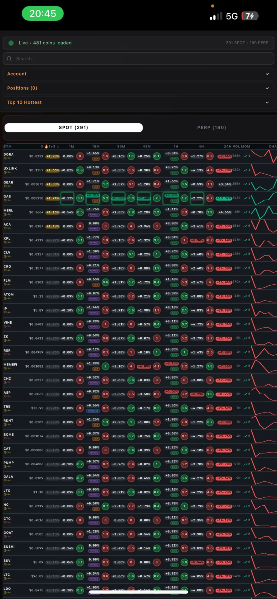
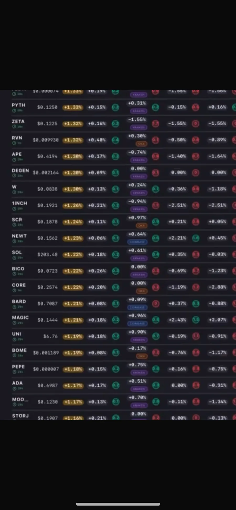
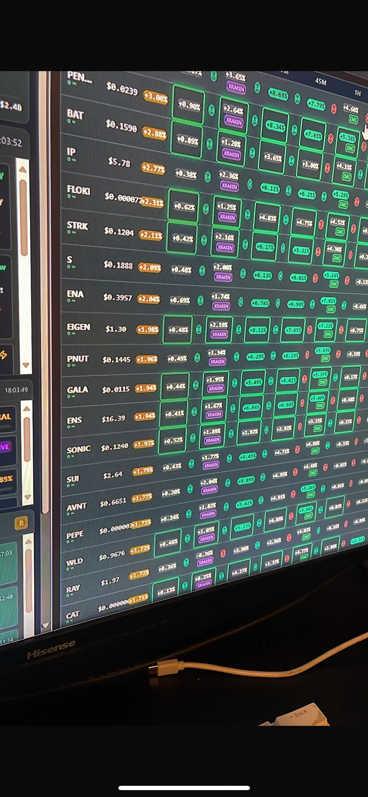
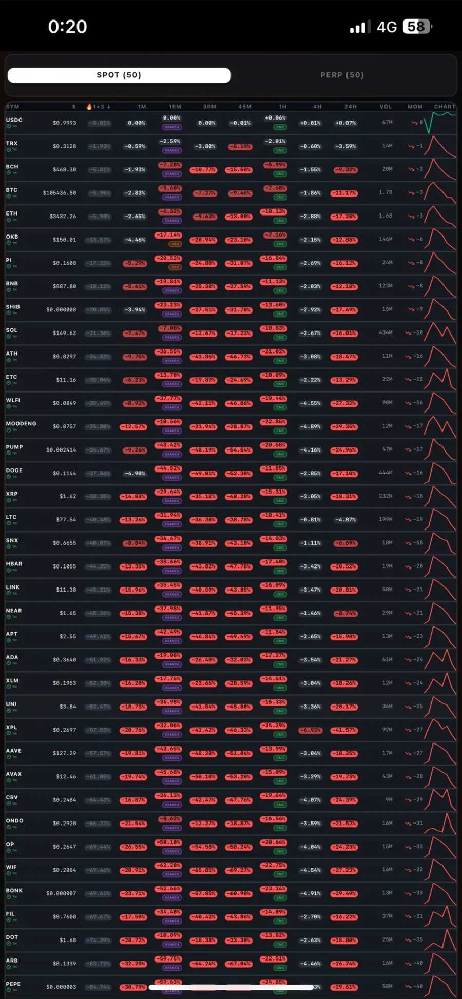

SURGE GURU
EN
עב
ع
480+
4
1s
surge guru · scanner
🔥
SURGE GURU
● LIVE
Updated 0s ago
SPOT (291)
PERP (190)
SYM
🔥1+3
1M
15M
30M
45M
1H
NEAR
4.8
+0.8
+2.0
+2.6
+2.0
+1.4
MOVE
3.1
+0.6
+1.6
+1.4
+1.1
+0.9
INJ
2.4
+0.3
+1.2
+1.1
+0.9
+0.7
ARKM
1.6
+0.4
+0.8
+1.0
+0.6
+0.5
SUI
0.9
+0.3
+0.4
+0.6
+0.5
+0.3
WLD
0.2
+0.9
-0.4
-0.6
-0.5
-0.3
🔥1+3
explosiveness ·
persistence
1m→1h · 480+ coins · SPOT & PERP ·
AI
analysis · chart
patterns
·
correlation
· surge
alerts
· OKX
positions
· OKX·Kraken·Coinbase ·
🔥1+3
explosiveness ·
persistence
1m→1h · 480+ coins · SPOT & PERP ·
AI
analysis · chart
patterns
·
correlation
· surge
alerts
· OKX
positions
· OKX·Kraken·Coinbase ·




surge.guru · live scanner
ZEUS · EUS
+12.94%
XLM · Stellar Lumens
+2.41%
INJ · Injective
+3.21%
01 · Scanner
02 · 🔥1+3
03 · AI
04 · Patterns
05 · Correlation
06 · Alerts & OKX
$
34